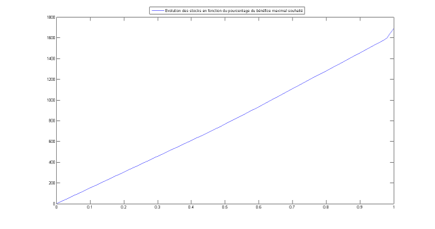
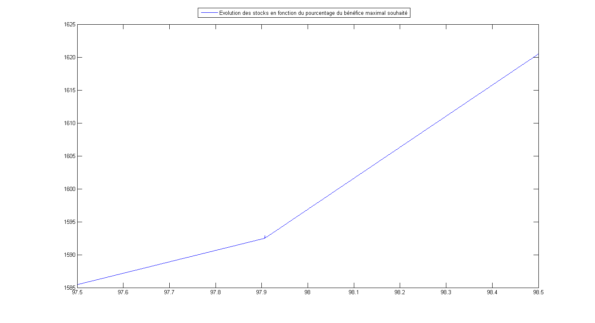

Notre but est d'avoir le moins de produits dans notre stocks, tout en étant en activité.
Pour obtenir ce résultat, il faut que l'on minimise la fonction qui détermine la quantité de matières premières nécessaires à la production d'un produit.
Pour calculer le stock, on utilise la table des quantités de matières premières par produit. On somme les valeurs des colonnes afin de déterminer la quantité de matières premières nécessaires à la production d'un produit, toutes matières premières confondues. On obtient un vecteur de taille [6,1]. On lui ajoute un vecteur de 1 de taille [6,1] qui modélise le produit créé pour l'utilisation de ces matières premières.
Pour obtenir un résultat exploitable, il nous faut ajouter une nouvelle contrainte qui modélise le fait d'être en activité. Pour modéliser ceci, nous prennons en référence les bénéfices auquels on applique un pourcentage pour déterminer un point de changement flagrant.

Suite à cette modélisation, on fait un zoom sur le point de changement et on obtient le graphique suivant :

Le résultat que nous avons pu observer se situe à environ 97.9% du bénéfice maximal pour lequel nous obtenons le vecteur : [1.715959247501309e-08; 6.424139577078101e-09; 3.251342993191541e-08; 5.731300118359133e-09; 2.424644574780829e+02; 95.014216970975650], qui nous indique quels produits il nous faut favoriser. On en déduit donc qu'il faut favoriser les produits E et F dans le cas où on devrait produire des produits car ce sont ceux là qui impliquent le moins d'augmentation de stock.